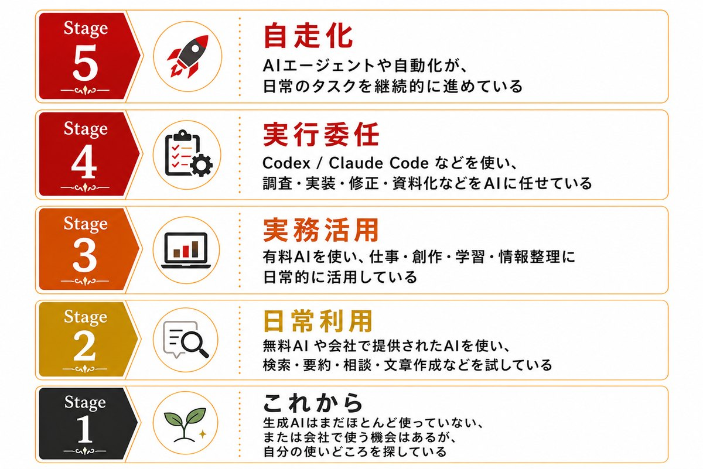

About
Wonder Tech Hubとは
AIやWeb3を、専門家だけのものにしない。かといって、薄い初心者向けにもしない。 Wonder Tech Hubは、その中間にある曖昧で面白い場所から始まります。
わからないことを、わからないまま話せる。ツールや技術に実際に触り、作るところまで行く。 知識量で距離を測るのではなく、仕事・創作・発信・投資・生活それぞれの現場から 「自分ならどう使うか」を持ち帰る場所です。
Concept
話して、触って、作る。
会話AIで止まっている状態から、作業委任・制作・プロトタイピングの入口へ。そこへ向かう3つの動き。
AI活用ステージ
いまの現在地から、一歩進める。
知識量を競うものではありません。ステージ1「これから」からステージ5「自走化」まで。いま自分がAIをどう使っているか、その現在地を確かめる目安です。

Events
開催イベント
毎回ひとつの入口を選び、実践に近づく夜をつくります。過去回と次回のテーマはこちら。
For You
こんな方に向いています。
ひとつでも当てはまれば、たぶん楽しめます。現在地はバラバラで大丈夫です。
Members
運営メンバー
専門性も現在地も違うメンバーが、技術と日常のあいだに橋をかけています。
FAQ
よくある質問
参加前の不安は、だいたいこのあたり。ほかにあればXのDMへ。
On X
最新情報はXで。
次回告知や当日の様子は @WonderTechHub で流しています。